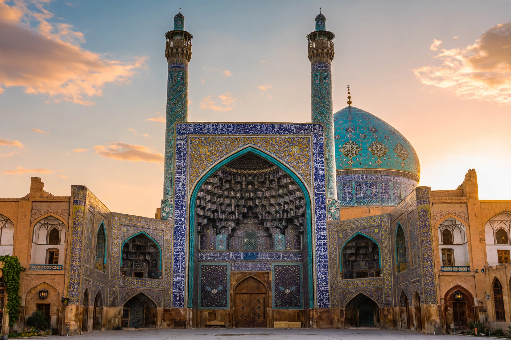

From Wikipedia, the free encyclopedia
| Persian architecture | |
|---|---|
| Region | Iran and the wider Persianate world |
| Periods | Achaemenid, Parthian, Sasanian, Islamic (Seljuk, Timurid, Safavid…) |
| Hallmarks | Iwan, dome on squinches, pishtaq, muqarnas, tilework, windcatchers, qanat-fed gardens |
| Landmarks | Persepolis, Shah Mosque of Isfahan, Golestan Palace |
Persian architecture (or Iranian architecture) is the architectural tradition of Iran and the surrounding Persianate world, with a documented history stretching from about 5000 BC to the present. Despite repeated invasion and conquest, it displays a striking continuity: an emphasis on symmetry, geometry, proportion, and the interplay of massive forms with intricate surface decoration, executed above all in brick, tile, and stucco.
The Achaemenid Empire (550–330 BC) built monumental palace cities at Persepolis, Susa, and Pasargadae, combining columned audience halls (apadana) with stone relief in an imperial style that synthesised the crafts of subject peoples. Parthian builders developed the iwan — a great vaulted hall open on one side — and the Sasanians raised enormous brick vaults such as the Taq Kasra at Ctesiphon and perfected the dome on squinches, techniques that passed directly into Islamic building.
After the 7th-century conquest, Persian forms reshaped the architecture of Islam. Seljuk builders created the four-iwan mosque plan and towering minarets; the Mongol Ilkhanate and especially the Timurids covered domes and portals (pishtaq) in glazed turquoise tile and muqarnas vaulting, as at Samarkand and the Goharshad Mosque. Safavid Isfahan under Shah Abbas I became a showcase of planned urbanism — the Naqsh-e Jahan square, the Shah Mosque, and the garden avenues of the Chaharbagh.
Traditional houses of the plateau turn inward around courtyards, cooled by windcatchers (badgir) and supplied by underground qanat channels; the Persian garden (charbagh), divided by water channels into four parts, became a model from Spain to Mughal India.
Persepolis · Iwan · Persian gardens · Islamic architecture
